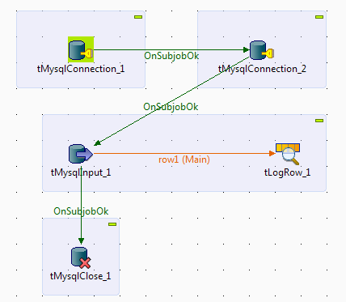
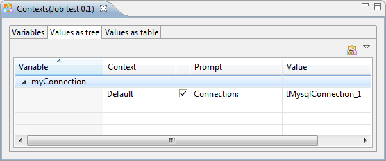
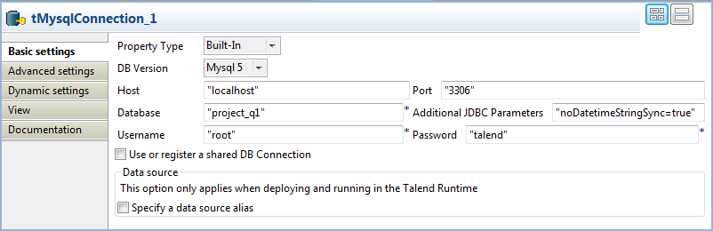
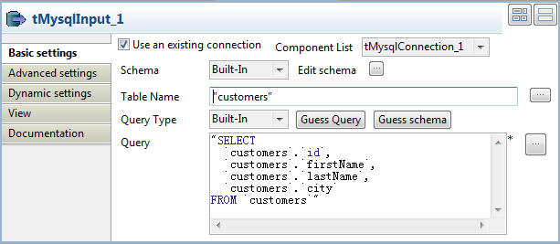
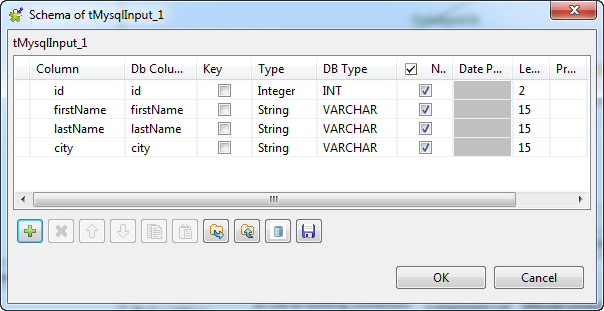
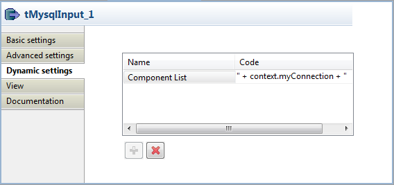
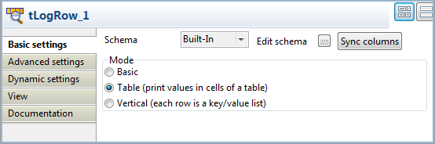
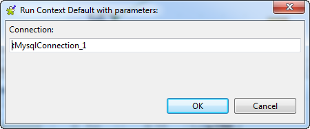
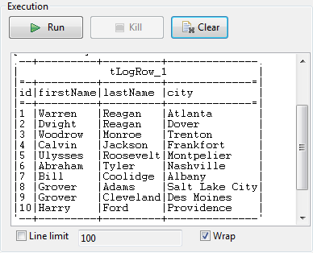

|
Component family |
Databases/MySQL | |
|
Function |
tMysqlInput reads a database and extracts fields based on a query. | |
|
Purpose |
tMysqlInput executes a DB query with a strictly defined order which must correspond to the schema definition. Then it passes on the field list to the next component via a Main row link. | |
|
Basic settings |
Property type |
Either Built-in or Repository. |
|
|
|
Built-in: No property data stored centrally. |
|
|
|
Repository: Select the repository file in which the properties are stored. The fields that follow are completed automatically using the data retrieved. |
|
|
|
Click this icon to open a database connection wizard and store the database connection parameters you set in the component Basic settings view. For more information about setting up and storing database connection parameters, see Talend Data Integration Studio User Guide. |
|
|
Use an existing connection |
Select this check box and in the Component List click the relevant connection component to reuse the connection details you already defined. NoteWhen a Job contains the parent Job and the child Job, if you need to share an existing connection between the two levels, for example, to share the connection created by the parent Job with the child Job, you have to:
For an example about how to share a DB connection across Job levels,see Talend Data Integration Studio User Guide. |
|
|
Host |
Database server IP address. |
|
|
Port |
Listening port number of DB server. |
|
|
Database |
Name of the database. |
|
|
Username and Password |
DB user authentication data. |
|
|
Schema and Edit Schema |
A schema is a row description, i.e., it defines the number of fields to be processed and passed on to the next component. The schema is either Built-in or stored remotely in the Repository.
NoteThis component offers the advantage of the dynamic schema feature. This allows you to retrieve unknown columns from source files or to copy batches of columns from a source without mapping each column individually. For further information about dynamic schemas, see Talend Data Integration Studio User Guide. |
|
|
|
Built-in: The schema is created and stored locally for this component only. Related topic: see Talend Data Integration Studio User Guide. |
|
|
|
Repository: The schema already exists and is stored in the Repository, hence can be reused. Related topic: see Talend Data Integration Studio User Guide. |
|
|
Table Name |
Name of the table to be read. |
|
|
Query type and Query |
Enter your DB query paying particularly attention to properly sequence the fields in order to match the schema definition. WarningIf using the dynamic schema feature, the SELECT query must include the * wildcard, to retrieve all of the columns from the table selected. |
| Specify a data source alias |
Select this check box and specify the alias of a data source created on the Talend Runtime side to use the shared connection pool defined in the data source configuration. This option works only when you deploy and run your Job in Talend Runtime. WarningIf you use the component's own DB configuration, your data source connection will be closed at the end of the component. To prevent this from happening, use a shared DB connection with the data source alias specified. This check box is not available when the Use an existing connection check box is selected. | |
|
Advanced settings |
Additional JDBC parameters |
Specify additional connection properties for the DB connection you are creating. This option is not available if you have selected the Use an existing connection check box in the Basic settings. NoteWhen you need to handle data of the time-stamp type 0000-00-00 00:00:00 using this component, set the parameter as:
|
|
|
Enable stream |
Select this check box to enables streaming over buffering which allows the code to read from a large table without consuming a large amount of memory in order to optimize the performance. |
|
|
Trim all the String/Char columns |
Select this check box to remove leading and trailing whitespace from all the String/Char columns. |
|
|
Trim column |
Remove leading and trailing whitespace from defined columns. NoteClear Trim all the String/Char columns to enable Trim columns in this field. |
|
|
tStatCatcher Statistics |
Select this check box to collect log data at the component level. |
|
Dynamic settings |
Click the [+] button to add a row in the table and fill the Code field with a context variable to choose your database connection dynamically from multiple connections planned in your Job. This feature is useful when you need to access database tables having the same data structure but in different databases, especially when you are working in an environment where you cannot change your Job settings, for example, when your Job has to be deployed and executed independent of Talend Studio. The Dynamic settings table is available only when the Use an existing connection check box is selected in the Basic settings view. When a dynamic parameter is defined, the Component List box in the Basic settings view becomes unusable. For more information on Dynamic settings and context variables, see Talend Data Integration Studio User Guide. | |
|
Usage |
This component covers all possible SQL queries for Mysql databases. | |
In this scenario we will read certain columns from a MySQL database, and then write them to a table in a local output file.
Drop tMysqlInput and tFileOutputDelimited from the Palette onto the workspace.
Link tMysqlInput to tFileOutputDelimited using a Row > Main connection.

Double-click tMysqlInput to open its Basic Settings view in the Component tab.

Warning
For Talend Open Studio for Big Data, the Property type, Schema and Query Type of components are always Built-in. For how to edit a Built-in schema, see Talend Data Integration Studio User Guide.
From the Property Type list, select Repository if you have already stored the connection to database in the Metadata node of the Repository tree view. The property fields that follow are automatically filled in.
For more information about how to store a database connection, see Talend Data Integration Studio User Guide.
If you have not defined the database connection locally in the Repository, fill in the details manually after selecting Built-in from the Property Type list.
Set the Schema as Built-in and click Edit schema to define the desired schema.
The schema editor opens:

Click the [+] button to add the rows that you will use to define the schema, four columns in this example id, first_name, city and salary.
Under Column, click in the fields to enter the corresponding column names.
Click the field under Type to define the type of data.
Click OK to close the schema editor.
Next to the Table Name field, click the [...] button to select the database table of interest.
A dialog box displays a tree diagram of all the tables in the selected database:

Click the table of interest and then click OK to close the dialog box.
Set the Query Type as Built-In.
In the Query box, enter the query required to retrieve the desired columns from the table.

Double-click tFileOutputDelimited to set its Basic settings in the Component tab.

Next to the File Name field, click the [...] button to browse your directory to where you want to save the output file, then enter a name for the file.
Select the Include Header check box to retrieve the column names as well as the data.
Save the Job.
The results below can be found after F6 is pressed to run the Job.

As shown above, the output file is written with the desired column names and corresponding data, retrieved from the database:
Note
The Job can also be run in the Traces Debug mode, which allows you to view the rows as they are being written to the output file, in the workspace.
In this scenario, we will read a table from a MySQL database, using a context parameter to refer to the table name.
Drop tMysqlInput and tLogRow from the Palette onto the workspace.
Link tMysqlInput to tLogRow using a Row > Main connection.

Double-click tMysqlInput to open its Basic Settings view in the Component tab.

Warning
For Talend Open Studio for Big Data, the Property type, Schema and Query Type of components are always Built-in. For how to edit a Built-in schema, see Talend Data Integration Studio User Guide.
From the Property Type list, select Repository if you have already stored the connection to database in the Metadata node of the Repository tree view. The property fields that follow are automatically filled in.
For more information about how to store a database connection, see Talend Data Integration Studio User Guide.
If you have not defined the database connection in the Repository, fill in the details manually after selecting Built-in from the Property Type list.
Set the Schema as Built-In and click Edit schema to define the desired schema.
The schema editor opens:

Click the [+] button to add the rows that you will use to define the schema, seven columns in this example: id, first_name, last_name, city, state, date_of_birth and salary.
Under Column, click the fields to enter the corresponding column names.
Click the fields under Type to define the type of data.
Click OK to close the schema editor.
Put the cursor in the Table Name field and press F5 for context parameter setting.

For more information about context settings, see Talend Data Integration Studio User Guide.
Keep the default setting in the Name field and type in the name of the database table in the Default value field, employees in this case.
Click Finish to validate the setting.
The context parameter context.TABLE automatically appears in the Table Name field.
In the Query type list, select Built-In. Then, click Guess Query to get the query statement.
In this use case, we want to read the records with the salary above 8000. Therefore, we add a
Whereclause and the final query statement is as follows:"SELECT "+context.TABLE+".`id`, "+context.TABLE+".`first_name`, "+context.TABLE+".`last_name`, "+context.TABLE+".`city`, "+context.TABLE+".`state`, "+context.TABLE+".`date_of_birth`, "+context.TABLE+".`salary` FROM "+context.TABLE+" WHERE "+context.TABLE+".`salary` > 8000"
Double-click tLogRow to set its Basic Settings in the Component tab.

In the Mode area, select Table (print values in cells of a table) for a better display of the results.
Save the Job.

In this scenario we will read data from database tables with the same data structure but in two different MySQL databases named project_q1 and project_q2 respectively. We will specify the connections to these databases dynamically at runtime, without making any modification to the Job.
Drop two tMysqlConnection, a tMysqlInput, a tLogRow, and a tMysqlClose components onto the design workspace.
Link the first tMysqlConnection to the second tMysqlConnection and the second tMysqlConnection to tMysqlInput using Trigger > On Subjob Ok connections.
Link tMysqlInput to tLogRow using a Row > Main connection.
Link tMysqlInput to tMysqlClose using a Trigger > On Subjob Ok connection.

To be able to choose a database connection dynamically at runtime, we need to define a context variable, which will then be configure it in the Dynamic settings of the database input component.
In the Contexts view, select the Variables tab, click the [+] button to add a row in the table, and give the variable a name, myConnection in this example.

Select the Values as tree tab, expand the myConnection node, fill the Prompt field with the message you want to display at runtime, and select the check box in front of the message text.
Fill the Value field with the unique name of the component you want to use as the default connection component, tMysqlConnection_1 in this example.
Double-click the first tMysqlConnection component to show its Basic settings view, and set the connection details. For more information on the configuration of tMysqlConnection, see the section called “tMysqlConnection”.
Note that we use this component to open a connection to a MySQL databased named project_q1.
Configure the second tMysqlConnection component in the same way, but fill the Database field with project_q2 because we want to use this component to open a connection to another MySQL database, project_q2.

Double-click the tMysqlInput component to show its Basic settings view.
Select the Use an existing connection check box, and leave the Component List box as it is.
Click the [...] button next to Edit schema to open the [Schema] dialog box and define the data structure of the database table to read data from.
In this example, the database table structure is made of four columns, id (type Integer, 2 characters long), firstName (type String, 15 characters long), lastName (type String, 15 characters long), and city (type String, 15 characters long). When done, click OK to close the dialog box and propagate the schema settings to the next component.
Fill the Table field with the database table name, customers in this example, and click Guess Query to generate the query statement corresponding to your table schema in the Query field.
In the Dynamic settings view, click the [+] button to add a row in the table, and fill the Code field with the code script of the context variable you just created,
" + context.myConnection + "in this example.In the Basic settings view of the tLogRow component, select the Table option for better display effect of the Job execution result.
In the Dynamic settings view of the tMysqlClose component, do exactly the same as in the Dynamic settings view of the tMysqlInput component.
Press Ctrl+S to save your Job and press F6 or click Run to launch it.
A dialog box appears prompting you to specify the connection component you want to use.
To use the default connection component, simply click OK.
The data read from database project_q1 is displayed in the Run console.

Press F6 or click Run to launch your Job again. When prompted, specify the other connection component, tMysqlConnection_2, to read data from the other database, project_q2.
The data read from database project_q2 is displayed in the Run console.

Warning
This scenario makes use of the Dynamic Schema feature, which is only available to users who have subscribed to one of the Talend solutions.
In this scenario we will read dynamic columns from a MySQL database, map them and then write them to a table in a local output file. By defining a dynamic column alongside known column names, we can retrieve all of the columns from the database table, including the unknown columns.
Drop a tMysqlInput, a tMap and a tFileOutputDelimited component onto the workspace.
Link tMysqlInput to tMap using a Row > Main connection.
Link tMap to tFileOutputDelimited using a Row > *New Output* (Main) connection.

Procedure 7.7. Data source and dynamic columns
Double-click tMysqlInput to open its Basic Settings view in the Component tab.

Warning
The dynamic schema feature is only supported in Built-In mode.
Select Built-in as the Property Type.
Select the DB Version from the corresponding list.
Next to Host, enter the database server IP address.
Next to Port, enter the listening port number of the database server.
Enter your authentication data in the Username and Password fields.
Set the Schema type as Built-in and click Edit schema to define the dynamic schema.
The schema editor opens:

Click the [+] button to add a row to the schema.
Under Column and Db Column, click in the fields to enter the corresponding column names.
Click the field under Type to define the type of data.
Click the arrow and select Dynamic from the list.
Warning
Under Type, the dynamic column type must be set as Dynamic.
Click OK to close the schema editor.
Next to the Table Name field, click the [...] button to select the database table of interest.
A dialog box displays a tree diagram of all the tables in the selected database:

Click the table of interest and then click OK to close the dialog box.
Set the Query Type as Built-In.
In the Query box, enter the query required to retrieve all of the columns from the table.
Warning
In the SELECT statement it is necessary to use the * wildcard character, to retrieve all of the columns from the selected table.

Click tMap to open its Basic Settings view in the Component tab.
Click [...] next to Map Editor to map the column from the source file.

Drop the column defined as dynamic from the input schema on the left onto the output schema on the right.
The column dropped on the output schema retains its original values.
Warning
The dynamic column must be mapped on a one to one basis and cannot undergo any transformations. It cannot be used in a filter expression or in a variables section. It cannot be renamed in the output table and cannot be used as a join condition.

Click OK to close the Map Editor.
Procedure 7.8. Output file
Double-click tFileOutputDelimited to set its Basic Settings in the Component tab.

Next to the File Name field, click the [...] button to browse your directory to where you want to save the output file, then enter a name for the file.
Select the Include Header check box to retrieve the column names as well as the data.
Save the Job.
The results below can be found after F6 is pressed to run the Job.

As shown above, the output file is written with all the column names and corresponding data, retrieved from the database via the dynamic schema:
Note
The Job can also be run in the Traces Debug mode, which allows you to view the rows as they are written to the output file, in the workspace.
For further information about defining and mapping dynamic schemas, see Talend Data Integration Studio User Guide.
For related scenarios, see:
the section called “Scenario: Dynamic context use in MySQL DB insert”.
the section called “Scenario 1: Displaying selected data from DB table”.
the section called “Scenario 2: Using StoreSQLQuery variable”.
the section called “Scenario 4: Writing dynamic columns from a source file to a MySQL database”.